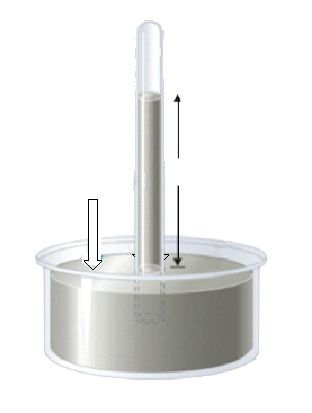
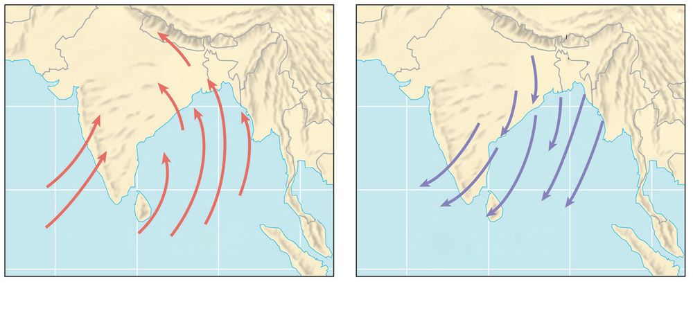
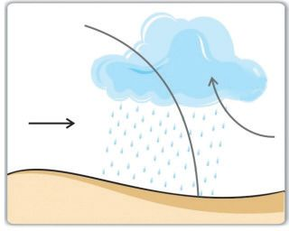

Observe the present atmospheric condition at your place. Are the atmospheric
conditions that we experience such as sun light, rain, mist, wind, cloud, and
the conditions such as hot and cold stable? The atmospheric conditions of
any place depend on the factors such as temperature, pressure, wind and
humidity. They in turn, are influenced by the amount of sunlight available
there. Hence these are called elements of weather.
Atmospheric conditions such as temperature, pressure, wind,
humidity and precipitation for a shorter period of time are
termed as Weather.
The average weather condition experienced for a longer period
over a larger area is termed as the Climate. The climate of a
place is determined by considering the weather conditions of
about 35 to 40 years. The climatic conditions of any place is
detrimental to the diverse flora and fauna as well as human life
of the place. The influence of climatic elements is evident not
only in the food habits, dressing, settlement and occupation
but also in the physical and mental conditions and in the
colour and race of mankind as well. Agricultural practices
world over mainly correspond to the climatic conditions.
Weather has always been an influential factor right from the
early marine voyages which revolutionised the world history,
to the modern transport and communication systems.
Conduct a discussion in the class on the significance of weather
studies in day-to-day human activities.
Hints: Agriculture, travel/ transport, fishing, tourism
Indian Meteorological
Department (IMD)
Indian Meteorological
Department is the
agency functioning
under the Ministry
of Earth Sciences,
Government of India.
This is the principal
agency responsible for
the weather observations, weather
forecast etc. in the country. Delhi
is the headquarters of IMD.
Hundreds of observation stations
are functioning at various places in
India as well as in Antarctica.
8
Let’s have a detailed overview on the
elements of weather and climate, being
influential on every human activity on
the earth.
Atmospheric Temperature
As you know, the sun is the sole source of
energy for the earth. Energy is produced
in the sun by nuclear fusion. Haven’t
you studied about nuclear fusion in the
science class?
Massive amount of energy continuously
produced in the sun through nuclear
fusion is emitted in the form of short waves.
Only a small amount of energy radiated
from the sun reaches the earth’s surface
(approximately one part of 200 million).
The amount of sun's rays reaching the
earth’s surface is called Insolation.
A part of insolation coming towards the
earth gets reflected or absorbed by the
atmospheric particles such as clouds
and dust particles. As the incoming
solar radiation is in the form of short
waves, it does not heat the atmosphere
considerably.
The earth’s surface gets heated by
insolation. Then the heat is transferred to
the atmosphere through various processes
from the earth’s surface. Conduction,
convection, advection and radiation are
the major processes of heat transfer.
Processes of heat transfer
in the atmosphere
Conduction : Heat is transferred to the
lower part of the atmosphere which is
directly in contact with the surface of the
earth.
Convection: As the heated air expands
and rises up, heat is transferred to higher
reaches of the atmosphere.
Advection: Heat is transferred horizontally
through wind.
Radiation: Emission of energy in the form
of long waves after the earth’s surface gets
heated up.
Standard X
Nuclear Fusion
Nuclear fusion is the reaction in
which two or more atomic nuclei
collide and merge together to
form a larger atom. This process
is common in the case of elements
with lower atomic number.
Massive amount of energy is
generated through this process.
Deuterium
Neutron
Energy
Tritium
Helium
In all the stars including the sun,
energy is continuously generated
through nuclear fusion. It is
estimated that 600 million tonnes
of Hydrogen is being converted
to Helium every second in the
sun through this process.
Short waves and Long
waves
Energy is radiated in the form of
short waves from hotter objects.
Due to high frequency, the short
waves traverse through the
atmosphere without obstruction.
Objects with relatively less heat
radiate energy in the form of long
waves. Due to low frequency,
long waves will be absorbed
or reflected by the atmospheric
particles.
The re-radiation of energy
in the form of long waves
from the earth’s surface is
called Terrestrial radiation.
The absorption of terrestrial
radiation by the atmospheric
gases such as carbon dioxide
heats up the atmosphere. This
phenomenon is termed as
Green House Effect.
What are Green Houses?
Inquire.
Almost entire energy reaching
the earth as insolation is
radiated back every day Thus
the surface temperature of
Consider the total amount of solar energy
the earth remains balanced
reaching the top of the atmosphere of the earth
as 100 units. Out of this, 35 units will be reflected without becoming extremely
hot or cold. This process of
back and 14 units will be absorbed by the
atmospheric particles. The total amount of energy heat balancing is called the
reaching the surface of the earth is estimated as
Heat Budget of the Earth.
51 units. Out of this, 34 units will be transferred
to the atmosphere through the processes of heat
transfer such as conduction and convection. By
re-radiating 17 units of energy directly from the
earth’s surface and 48 units from the atmosphere,
the entire energy received by the earth and its
atmosphere gets sent back.
Discuss the
importance of heat
budget in sustaining
the earth as a life
supporting planet.
Do we get the same amount of energy from the sun throughout
the day?
The surface temperature of the earth gradually increases by the
flow of insolation since the sun rise and attains the maximum by
the noon. As the atmosphere is heated through various processes
of heat transfer, it takes more time for the atmosphere to get heated
up than the time taken for the earth’s surface. Thus the temperature
recorded at 2pm is considered as the maximum temperature of the
day by the meteorologists. The surface temperature of the earth
gradually decreases in the afternoon due to the decrease in intensity
of insolation as well as the simultaneous terrestrial radiation.
The earth’s surface as well as the atmosphere get cooled by more
energy loss through terrestrial radiation during night. Thus the
temperature recorded just before the sun rise is considered as the
minimum temperature of the day.
10
Maximum – Minimum Thermometer
Atmospheric temperature
is measured using
an instrument called
Thermometer.
Maximum – Minimum
thermometer is a special
type of instrument made
by connecting two ordinary
thermometers using a
U-shaped glass tube. The
Maximum temperature and
the Minimum temperature
of a day can be read out
from the recordings of
a Maximum-Minimum
thermometer.
Fig 1.2
Diurnal range of temperature is the difference
between the maximum temperature and the
minimum temperature of a day.
Diurnal Range = Maximum temperature – Minimum temperature
The average temperature of a day is called as Daily
mean temperature.
=
F = oC x 9_ + 32
5
5_
o
o
C = ( F - 32) 9
o
By making use of the maximum temperature and the
minimum temperature, diurnal range of temperature
and daily mean temperature can be calculated.
Daily mean
temperature
Degree Celsius
and Degree
Fahrenheit are
the common units
for recording
temperature. In
Fahrenheit the
melting point of
water is 32º and the
boiling point is 212º.
This is equivalent to
0º Celsius and 100º
Celsius respectively.
Maximum temperature + Minimum temperature
2
Heat and
Temperature
The total energy
of an object due to
molecular movement
is termed as Heat. It is
measured in Joule.
Degree of hotness
of an object is
its temperature.
Temperature is
recorded in units such
as Degree Celsius,
Degree Fahrenheit
and Kelvin.
Calculate the diurnal range of temperature and the daily mean
temperature if the maximum and minimum temperatures of a place
are 36º C and 28º C respectively.
Standard X
11
Page 12
Figure fig_ch01_p012_01 (Page 12)
Social Science II
Data regarding the temperature are being utilized for climatic
studies and further analysis. Plotting the temperature recorded
at specific places, smooth curved lines are drawn connecting
the places having equal temperature. These imaginary lines
are called Isotherms. Isotherm maps are very useful for
analysing temperature distribution.
See the map showing the world distribution of temperature
using isotherms (Fig 1.3).
C
.5˚
0˚C
0˚
C
-25˚
C
-12
˚C
10
20˚C
Equator
30˚C
30˚C
Thermal Equator
˚C
30
˚C
30
C
20˚C
20˚
10˚C
0˚C
Global Distribution of Temperature (In Celsius) January
Global Distribution of Temperature- Isotherm Map
Fig 1.3
Is the distribution pattern of isotherms shown in the map
uniform? You might have noticed that the temperature
gradually decreases while moving away from the equator.
The isotherms show a noticeable bend
along land-sea confluences. What may be
the reason?
Compared to the Northern Hemisphere,
Isotherms are more or less parallel to the
latitudes in the Southern Hemisphere.
Why?
There is spatial and temporal variation
in the temperature experienced on earth.
Let’s examine the factors influencing the
distribution of temperature.
Thermal Equator
Thermal Equator
Equator
Imaginary line connecting
places with highest mean
annual temperature along every
longitude is termed as Thermal
Equator.
Latitude
Very high temperature is experienced
along the equatorial regions where the incidence of sun’s rays
is almost vertical.
North Pole (90˚ N)
Arctic Circle (66½˚ N)
Sun rays
Tropic of Cancer (23½˚ N)
Equator (0˚)
Tropic of Capricorn (23½˚ S)
Antarctic Circle (66½˚ S)
South Pole (90˚ S)
Fig 1.4
Owing to the spherical shape of the earth, the incidence of
sun’s rays are more inclined away from the equator towards
the poles. Thus the temperature gradually decreases towards
both the poles. On the basis of this, different temperature
zones may be formed.
Standard X
Observe the diagram (Fig 1.5). Familiarise the temperature zones
and identify the latitudes between which these zones are located.
Altitude
Temperature Low
..........˚ C 6 Km
-2.0˚ C 5 Km
4.4˚ C 4 Km
10.8˚ C 3 Km
17.2˚ C 2 Km
23.6˚ C 1 Km
Atmospheric temperature
gradually decreases with
increase in altitude. The
phenomenon of gradual
decrease in temperature
at the rate of 6.4º Celsius
per kilometre of altitude
is termed as Normal
Lapse Rate.
30˚ C 0 Km
Temperature High
Fig 1.6
Observe the diagram (Fig 1.6). Familiarise the decrease in
temperature with altitude. Estimate the temperature at 6 km
altitude and label it.
Why do we generally experience low temperature at places situated at
higher elevations such as Ooty, Munnar and Kodaikanal?
Differential Heating of Land and Sea
Compared to sea, land gets heated and cooled at a faster rate.
Thus the land areas experience higher summer temperature
and lower winter temperature, when compared to sea.
Distance from the Sea
The winds blowing from land to
sea and vice versa help to moderate
the temperature experienced along
coastal areas. Away from the sea,
the maritime influence gradually
decreases to cause very high
day temperature and low night
temperature.
A
B
Fig 1.7
Look at the diagram (Fig 1.7). Analyse , which place, A or B,
experiences the highest diurnal range of temperature. Give reason
for your answer.
Diurnal range of temperature is generally low in Kerala. Why?
Ocean Currents
The temperature along the coastal
regions is raised or lowered by the
warm currents and cold currents
respectively as they pass by. For
example, the warm current called
North Atlantic Current gives relief
for the Western European countries
o
N
Canada
Labrador
Gulf Stream
Europe
North
Atlantic
Current
Canary
Fig 1.8
Standard X
n
ia
eg
rw
15
Page 16
Figure fig_ch01_p016_01 (Page 16)

Figure fig_ch01_p016_02 (Page 16)
Social Science II
from severe cold. On the other hand, the places situated along
the North Eastern Canada, which are also in the same latitude,
experience severe cold for months due to the influence of
Labrador cold current.
Relief
Observe fig 1.9, which of the two
mountain slopes marked as A
and B gets more sunlight? Now
you must have understood that
the availability of sunlight differs
from one place to another in
accordance with the relief. Due
to this difference, the mountain
Fig 1.9
slopes facing the sun experience
higher temperature and opposite slopes experience lower
temperature.
B
A
∧
∧
∧
∧
Sun's rays
Barometer
Air Pressure
Mercury Level
Fig 1.10
Now you might have understood
that there is spatial and temporal
variability in the distribution of
temperature and also know the
reasons for the same.
Let’s see how these spatio-temporal
variations in temperature influence
other atmospheric phenomena.
Fig 1.11
Barometer is the instrument used
to measure atmospheric pressure.
Barometers are of different types
such as Mercury Barometer ( Fig 1.10)
and Aneroid Barometer (Fig 1.11).
In Mercury Barometer, the average
pressure on the earth’s surface is
recorded as 76 cm. Atmospheric
pressure is usually recorded in units
millibars (mb) or hectopascal (hpa).
The average atmospheric pressure
experienced on the earth’s surface is
estimated as 1013.2mb or hpa.
Atmospheric Pressure and
Winds
Like any other matter, air also has
weight. The weight exerted by the
atmospheric air over the earth’s
surface is termed as Atmospheric
Pressure.
Following are the factors affecting
atmospheric pressure.
Temperature
Altitude
Humidity
Let’s examine how these factors influence atmospheric
pressure.
Atmospheric air expands on getting heated, and rises up. Thus
low pressure regions are formed. This rising air gradually
cools, contracts and subsides to form high pressure regions.
As the density of atmospheric gases decreases with increase
in altitude, atmospheric pressure gradually decreases. The
vertical variation of atmospheric pressure is at the rate of
about 1mb per 10 metres.
Do you know?
Why do we feel discomfort like clogging of
ears while travelling to higher elevations?
As the humidity increases, the water molecules
displace the heavier gases in the atmosphere like
nitrogen and oxygen. The atmospheric pressure
becomes low, as humid air is lighter than dry air.
We do not feel the
severe pressure
exerted by the
atmospheric air on
us. This is because
our body exerts an
equivalent body
pressure (opposing
pressure) to balance
this.
Coastal regions experience comparatively lower atmospheric pressure
than interior locations. Why?
The air movements right from light breezes to violent gales
are the results of variations in atmospheric pressure. Thus,
thorough analysis regarding the spatial distribution of
atmospheric pressure is essential for meteorological purposes.
Smooth curved lines are drawn on maps to connect places
having equal atmospheric pressure. These imaginary lines are
called Isobars.
Map showing the world distribution of atmospheric pressure
using isobars is given below (Fig 1.12). The symbol 'H'
represents High Pressure Centres and 'L' Low Pressure
Centres.
L
10
0
10 5
10 10
15
L
5
100 010
1
5
102
0
103
0
102
H
1015
05
1020
1020
H
H
L
10
101
0
101
5
1015
1015
15
10
H
20
H
10
1015
1010
H
101
1015
0
1000
1010
1010
1005
995
Global Distribution of Pressure (Millibars) January
Global Distribution of Pressure - Isobar Map
Fig 1.12
Download the pressure distribution maps of different seasons
with the help of ICT and familiarise the difference in pressure
distribution.
As we know, temperature is inversely proportional to pressure.
Thus the lowest atmospheric pressure might be experienced
in the equatorial region and the highest might be in the polar
regions. The pressure should therefore increase from the
equator towards the poles. But actually this is not the case.
Distinct pressure conditions prevail at certain specific zones
due to the influence of the rotation of the earth. Different
pressure belts are formed along certain specific latitudinal
zones. These are called Global Pressure Belts.
18
Part 1
Page 19
Figure fig_ch01_p019_01 (Page 19)
Weather and Climate
Global Pressure Belts
Observe the given diagram (Fig
1.13) and identify the major Global
Pressure Belts.
The expansion and rising up
of air due to high temperature
prevailing in the equatorial region
is the cause for the formation of
Equatorial Low Pressure Belt.
This zone of vertical air currents
is devoid of winds. Being the
windless zone, this pressure belt is
called Doldrum.
90˚ N
Polar High Pressure Belt
Sub Polar Low Pressure Belt
60˚ N
Sub Tropical High Pressure Belt
30˚ N
Equatorial Low Pressure Belt
0˚
Sub Tropical High Pressure Belt
30˚ S
Sub Polar Low Pressure Belt
60˚ S
Polar High Pressure Belt
90˚ S
As we know the atmospheric
Global
Pressure
Belts
conditions along the poles are
Fig 1.13
just opposite to that in equatorial
region. Polar High Pressure Belts
are formed as a result of the contraction and subsidence of cold
air.
The rising warm air along the equatorial region moves
polewards as upper air winds which gradually cool and
subside at about 30º North and 30º South latitudes. This results
in the formation of Sub Tropical High Pressure Belts.
At about 60º North and 60º South latitudes, normally high
pressure zones should be formed due to lower temperature
conditions. But owing to the continuous throwing up of air
along these regions caused by the influence of the rotation of
the earth Sub Polar Low Pressure Belts are formed.
As the temperature conditions vary with the apparent
movement of the sun, the global pressure belts are subjected
to relative shifts. Global pressure belts may shift to about 5º
to 10º northwards during summer season and shift southward
Standard X
19
Page 20
Figure fig_ch01_p020_01 (Page 20)
Social Science II
during winter season. This shifting of global pressure belts
has decisive influence on global climate.
The pressure differences in the atmosphere are largely
noticeable through air movements. There are two types of air
movements in the atmosphere – Air Currents and Winds. Air
Currents are the vertical movements of air and Winds are the
horizontal movements of air from high pressure areas to low
pressure areas. Winds are of different types, varying from
light breezes to devastating gales.
Winds are named according to the direction from which they
blow. For example, the winds blowing from the south west
are termed as south west winds and the winds blowing from
the sea towards the land are termed as sea breezes.
What is the name given to the monsoon winds blowing towards the
north east direction in India?
90˚ N
Deflection Maximum at the Pole
60˚ N
Deflection to Right
30˚ N
No Deflection at Equator
0˚
30˚ S
Deflection to Left
60˚ S
Deflection Maximum at the Pole
90˚ S
Coriolis Force
Fig 1.14
One of the major factors
influencing the direction
of winds is the Coriolis
Force. You have learnt about
Coriolis Force in your earlier
classes. What is Coriolis
Force?
Owing to the Coriolis
effect, the winds will deflect
towards the right of its
direction in the Northern
Hemisphere and towards
the left of its direction in the
Southern Hemisphere.
The speed and intensity of
winds are influenced mainly
by two factors.
Pressure gradient is the change in pressure over a horizontal
distance. If there is considerable change in pressure between
nearby places, it indicates high pressure gradient. If there is no
considerable difference of pressure over horizontal distance,
pressure gradient is said to be low. At places where there is
high pressure gradient, winds will be strong.
Analyse the patterns of isobars given below (fig 1.15) and find out
where the winds are strong. (Put a tick mark)
9
10 98 m
0
b
0
10
02 mb
m
b
b
m
8
L
L
99
4
00
0
00
1
b
m
1
b
m
1
8
00
1
b
2m
0
10
b
4m
0
10
b
m
6
00
b
m
0
1
10
b
m
H
H
Pressure Gradient
Fig 1.15
The friction caused by hills, mountains, forests and man-made
structures will obstruct the free flow of winds.
Winds are comparatively stronger over oceans than over continents.
Why?
Anemometer and Wind Vane
Anemometer is the instrument used to measure the speed
of wind. The distance travelled by wind per hour can be
estimated using this instrument.
Wind Vane is the instrument which indicates the direction of
wind.
Standard X
Now you might have understood how the winds are formed
and also have familiarised the factors influencing the speed
and direction of wind.
Let’s go through the different types of winds.
Wind
Permanent Winds
Periodic Winds
Local Winds
Variable Winds
Permanent Winds
The winds blowing constantly over a particular direction
throughout the year are called Permanent winds. These winds
are also known as prevailing winds and planetary winds.
These winds blow between global pressure belts. Trade winds,
Westerlies and Polar winds are the major permanent winds.
Observe the diagram (Fig 1.17) and identify the pressure belts
between which each of these permanent winds blow. Make use of
the diagram showing the global pressure belts (Fig 1.13) also.
From the Sub tropical high pressure
belts to the equatorial low pressure
belt
ITCZ
Trade winds are North Easterlies in the
Northern Hemisphere and are South
Easterlies in the Southern Hemisphere. Why?
Westerlies are comparatively stronger in the
Southern Hemisphere than in the Northern
Hemisphere. Why?
Periodic Winds
The equatorial low
pressure region
where the trade
winds from the
Northern Hemisphere
and the Southern
Hemisphere converge
is known as Inter
Tropical Convergence
Zone (ITCZ) . ITCZ
shifts with the
apparent movement
of the sun.
Winds subjected to the periodic reversal of their
direction are termed as Periodic winds. Diurnal winds such
as the land breezes, sea breezes, mountain breezes and valley
breezes as well as the monsoon winds which repeat on summer
and winter are periodic winds.
Land Breezes and Sea Breezes
You have learnt about the formation of land breezes and sea
breezes in the previous class.
Illustrate the land breezes and sea breezes and write a note on their
formation in your note book.
Mountain Breezes and Valley
Breezes
During night, air along the
mountain slopes cools, contracts
and moves down slope. These
winds are called mountain
breezes.(Fig 1.18)
During day time, the heating
by sunlight and rising up of air
along the mountain slopes make
the wind to blow up slope from
the valley. These winds are called
valley breezes. (Fig 1.18)
Monsoon Winds
The term ‘monsoon’ implies the
seasonal reversal in the wind
pattern. During summer the
Fig 1.18
South Asian land masses,
especially the Indian Sub
Continent, gets heated up intensely and severe low pressure
develops. Wind blows towards the land mass from the
Indian Ocean where comparatively high pressure prevails.
These winds blowing as South West winds due to Coriolis
effect causes widespread rainfall on entering the land. This is
Southwest monsoon.
During winter, as the northern land masses get severely
cooled, high pressure develops over North India. This causes
the winds to blow continuously from the land towards the
Indian Ocean as north east winds. These winds which are
generally dry in nature are called Northeast monsoon winds.
Observe the diagram (Fig 1.19) to familiarise the direction of
monsoon winds.
24
Part 1
Page 25

Figure fig_ch01_p025_01 (Page 25)
Weather and Climate
China
China
India
India
Indian Ocean
Indian Ocean
MAP NOT TO SCALE
South West Monsoon
MAP NOT TO SCALE
Fig 1.19
North East Monsoon
Local Winds
Local winds are winds formed as a result of local differences
in temperature and pressure in different parts of the world.
Most of the local winds are periodic in nature. These winds
are known by local regional names. Details regarding a few
such local winds are given in the table (Table 1.1).
Local Winds
Region
Characteristics
Loo
North Indian Plains
Hot wind
Chinook
Slopes of Rocky Mountains in
North America
Dry hot wind
Foehn
Slopes of Alps Mountain in
Europe
Dry hot wind
Harmattan
Sahara Desert in Africa
Relief to intense heat
Table 1.1
Standard X
25
Page 26
Social Science II
Variable Winds
Winds of short duration, of which the intensity or direction
cannot be predicted are called variable winds. Cyclones and
Anticyclones belong to this category.
Cyclones
Low
Pressure
Northern Hemisphere
Low
Pressure
Southern Hemisphere
Fig 1.20
26
Cyclones
Cyclones are low pressure systems towards
which winds whirl from the surroundings.
Even if the cyclones developed over the tropical
region are comparatively lesser in diameter,
they are devastative than temperate cyclones.
Tropical cyclones originate over tropical
oceans. The tropical cyclones moving in northwest direction over the oceans, get dissipated
on hitting the lands. Different temperature
conditions prevailing on land and also the
friction causes the dissipation of cyclones on
entering land. The tropical cyclones cause
intense rainfall and strong whirlwinds along the
coasts. They are known by different names in
different parts of the world such as Hurricanes,
Typhoons, Willy Willies, Tornadoes etc.
Temperate cyclones are formed in temperate
regions where warm and cold air masses meet.
Even if the temperate cyclones are larger in
diameter, they are less devastative. Unlike the
tropical cyclones, these low-pressure systems
can move over land also.
The direction of flow of air into the cyclones are
anticlockwise in the Northern Hemisphere and
clockwise in the Southern Hemisphere.
Compare the tropical cyclones with temperate cyclones and
prepare a note.
Anticyclones
Anticyclones are high pressure system from
which winds whirl outwards. Generally
anticyclones do not cause atmospheric
disturbances. The direction of flow of winds
from anticyclones is clockwise in the Northern
Hemisphere and anticlockwise in the Southern
Hemisphere.
You have understood how the variability in
sunshine at various places and at times leads
to the air movements and circulations. Another
weather element caused by solar energy
is the atmospheric humidity. Let’s discuss
some important facts regarding atmospheric
humidity.
Anticyclones
High
Pressure
Northern Hemisphere
Humidity
You might have noticed that water rises as
water vapour on heating. As a result of heating
by sunlight water from different sources on
the earth’s surface turns to water vapour and
reaches the atmosphere in different quantities.
High
Pressure
Southern Hemisphere
Fig 1.21
Name the process by which water turns to water vapour?
Water vapour remains invisible in the atmosphere. The
invisible water content in the atmosphere is called Humidity.
What are the sources through which water vapour reaches atmosphere?
Actual amount of water vapour present per unit volume of
atmosphere is called Absolute humidity.
Atmospheric humidity varies from place to place depending
on the temperature and availability of water. There is a limit to
the amount of water vapour that the atmosphere can hold at a
particular temperature. The ratio between the actual amount
of water present in the atmosphere and the total waterholding capacity of atmosphere at that particular temperature
and time is referred to as Relative Humidity. It is expressed
in percentage.
Relative Humidity
Hygrometer and Wet and
Dry Bulb Thermometer
Fig 1.22
Fig 1.23
Hygrometer is the instrument used
to measure atmospheric humidity.
Relative humidity can be
estimated based on the difference
in temperature recorded in wet
and dry bulb thermometers.
28
=
Absolute Humidity
Total water holding
capacity of the atmosphere
x 100
Measure the relative humidity
everyday for a particular
period by using the wet and
dry bulb thermometer in the
school weather station/ social
science lab and prepare a
table.
The state at which the atmosphere is fully
saturated with moistur/water vapour
is known as saturation level and the
temperature at which this level is attained
is termed as saturation point. When the
atmosphere is fully saturated with water
vapour, condensation begins.
At the saturation level, what may be the relative humidity in
percentage?
What is condensation?
The atmospheric moisture is visible only when the water
vapour condenses to form tiny droplets of water. Different
forms of condensation are shown in the pictures (Fig 1.24)
given below.
Forms of Condensation
Dew
Frost
Fig 1.24
Mist and Fog
Cloud
Dew: During the night, as the earth’s surface cools down, the atmosphere close to
the earth’s surface also cools. The water vapour condenses to form tiny droplets
of water which may cling on to the grass tips, leaf blades as well as other cold
surfaces.
Frost: Whenever the atmospheric temperature falls below 0º Celsius, especially
during nights, tiny crystals of ice are formed instead of dew.
Mist and Fog: When the atmosphere gets cooled, the water vapour condenses to
form tiny droplets of water and remains suspended in the lower atmosphere. Fog
or mist is formed as a result of condensation of water vapour around tiny dust
particles in the lower atmosphere. Fog and mist can be distinguished based on the
range of visibility through them.
Clouds: Clouds are formed as a result of condensation around the tiny dust
particles in the atmosphere. The water droplets thus formed are less than 0.001 cm
in diameter. This is why, they remain suspended in the atmosphere.
We can see various types of clouds in the sky. Clouds can be
classified based on their form as well as the height at which
they are formed.
Standard X
Thin, delicate, feather-like clouds formed at very high altitudes
are called Cirrus clouds.
Cirrus Cloud
Cumulus Cloud
Nimbus Cloud
Stratus Cloud
Fig 1.25
Thick-layered clouds, usually formed in the lower atmosphere,
are called Stratus clouds.
Cotton wool-like clouds formed as a result of intense convection
currents, are called Cumulus clouds. These clouds have great
vertical development.
Dark, rain-bearing clouds, formed in the lower part of the
atmosphere, are called Nimbus clouds. The dark colour is due
to the thick concentration of water droplets which does not
allow light to penetrate through them.
30
The clouds mentioned above are not usually seen
independently. Mostly we see the combinations of different
types of clouds. Such clouds are called as cirro stratus, strato
cumulus, cumulo nimbus, nimbo stratus etc.
Watch the sky and try to distinguish the various types of clouds.
Remember to note the season and time at which the different clouds
appear.
As a result of continuous condensation, the size of water
droplets within the clouds gradually increases. As the size
of water droplets grows beyond the limit of resistance
against gravity, water droplets will be released from the
clouds and may fall on earth in various forms. This is termed
as precipitation. Rainfall, snow fall and hailstones are the
different forms of precipitation.
Rainfall is the common and familiar manifestation of
precipitation which is in the form of water droplets.
Temperature falls below 0º Celsius in cold climatic regions as
well as in temperate regions during winter. In such places,
precipitation occurs in the form of tiny crystals of ice. This
form of precipitation is called snowfall.
The water droplets released from the clouds are subjected
to repeated condensation at different levels of atmosphere.
It reaches the earth in the form layered ice pellets. These are
termed as hailstones.
Is hailstone a winter phenomena? Inquire.
What is the form of precipitation most familiar to you?
Types of Rainfall
d
in
s
oi
M
tW
Orographic Rainfall
Fig 1.27
Moisture-laden winds from the
sea enter the land and will be
raised along the mountain slopes.
This leads to condensation and
formation of rain clouds along the
windward slopes of mountains.
Rainfall occurring in this manner
is called Orographic rainfall or
Relief rainfall. While the windward slopes of mountains get
plenty of rainfall, the descending
dry air makes the leeward side
rainless. Such regions are called
Rain Shadow Regions.
While Kerala receives Southwest monsoon rains, the western parts of
Tamil Nadu receives very little rainfall. Why?
Haven’t
you
noticed
the
occurrence of afternoon rains
during summer season? This
is due to convection process.
Rainfall occurring in this manner
are called Convectional Rainfall.
Convection
In equatorial climatic
regions convectional
rainfall is a diurnal
phenomenon. Why?
Convectional Rainfall
Fig 1.28
32
Part 1
Page 33
Figure fig_ch01_p033_01 (Page 33)

Figure fig_ch01_p033_02 (Page 33)
Weather and Climate
As the convectional rainfall
commonly occurs during
afternoons, it is also called
4 O’Clock rains.
Fr
t
Cold Air
ai
r
Cyclonic Rainfall
Fig 1.29
You might have realised that
every pulse on our earth is being sustained
by the sun. You have also understood that
the earth maintains a natural heat balancing
system. Studies reveal that this balance is
being disturbed due to abrupt changes in the
composition of the atmosphere. The following
chapter discusses in detail the natural and
anthropogenic causes for global climatic
change. We must check the unscientific and
non-sustainable human interventions, to keep
the delicate balance of the atmosphere, so as to
safe guard this living planet for generations to
come.
Standard X
m
ar
W
on
In cyclonic systems where
warm and cold air meet, the
warm air will be raised up
to cause condensation and
rainfall. This type of rainfall
is called Cyclonic Rainfall.
As the boundary lines
between warm and cold air
masses are known as fronts,
this type of rainfall are also
called Frontal Rainfall.
Torrential rain and
Cloud burst
Intense rainfall occurring at
certain specific areas for a
shorter duration is refereed
to as torrential rain. This
may lead to flash floods and
landslides. If the amount
of rainfall exceeds 10 cm
per hour, it is considered
as Cloud burst. It is most
common in mountainous
regions. Meteorologists
recognised that the landslides
that occurred in Kavalappara
and Puthumala in Kerala
during 2019 were the result
of torrential rain following
cloud burst. Experts perceive
the landslides of Mundakkai
and Chooralmala in 2024 to
be the result of cloud burst.
33
Page 34
Figure fig_ch01_p034_01 (Page 34)
Social Science II
Extended Activities
1. Read the daily maximum temperature and minimum temperature using
the max-minimum thermometer in the school weather station/social
science lab. Estimate the daily mean temperature and diurnal range of
temperature, and display it in the school notice board.
2. Measure the daily amount of rainfall using rainguage for a particular
period. Prepare a bar diagram using the data and exhibit it in your class
room. Remember to display the daily amount of rainfall in the notice board.
3. Prepare a digital album by collecting pictures of different types of clouds
using ICT.